Hướng dẫn cách hạch toán nghiệp vụ mua hàng hóa rồi bán thẳng cho người mua mà không tiến hành nhập kho trên phần mềm Misa trong cả 2 trường hợp: Mua hàng trong nước và mua hàng nhập khẩu
Trường hợp 1. Mua hàng trong nước không qua kho
1 - Cách định khoản hạch toán
- Nợ TK 621, 623, 627, 641… - Giá mua chưa có thuế GTGT
- Nợ TK 133 - Thuế GTGT được khấu trừ (nếu có)
- Có TK 111, 112, 331… - Tổng giá thanh toán
2 - Mô tả chi tiết nghiệp vụ
Ngày 19/01/2023, doanh nghiệp mua hàng của Công ty TNHH Diệu Tâm đưa ngay vào phân xưởng sản xuất.
Vải áo, số lượng 300 m, đơn giá 56.500đ, thuế GTGT 10%
Vải váy, số lượng 150 m, đơn giá 48.950đ, thuế GTGT 10%
Doanh nghiệp chưa thanh toán tiền hàng cho công ty TNHH Diệu Tâm.
3. Chi tiết các bước thực hiện
- Trên phân hệ "Mua hàng" => chọn tab "Mua hàng hóa, dịch vụ" => chọn chức năng "Thêm" => chọn "Chứng từ mua hàng hóa".
- Chọn loại chứng từ mua hàng cần lập là "Mua hàng trong nước không qua kho".
- Lựa chọn phương thức thanh toán cho chứng từ mua hàng là "Chưa thanh toán" hoặc "Thanh toán ngay".
CHÚ Ý: Với phương thức "Chưa thanh toán" => có thể thiết lập "Điều khoản thanh toán" và theo dõi tình hình thanh toán công nợ với "Nhà cung cấp" theo điều khoản thanh toán.
- Xác nhận lập chứng từ mua hàng có nhận kèm hóa đơn hoặc không có hóa đơn.
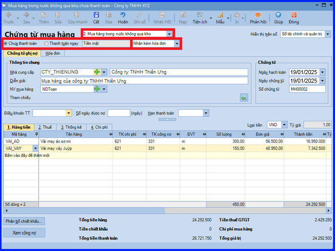
- Khai báo thông tin cho chứng từ mua hàng, sau đó các bạn ấn "Cất".
- Chọn chức năng "In" trên thanh công cụ, sau đó chọn mẫu chứng từ cần in.
CHÚ Ý:
- Nếu chứng từ mua hàng lựa chọn phương thức "Thanh toán ngay" => hệ thống sẽ căn cứ vào hình thức thanh toán là tiền mặt, uỷ nhiệm chi, séc chuyển khoản hay séc tiền mặt mà tự động sinh ra các chứng từ chi tiền mặt hoặc chi tiền gửi ngân hàng trên phân hệ "Quỹ" hoặc "Ngân hàng".
- Đối với trường hợp mua hàng đã nhận được hóa đơn của nhà cung cấp, khi lập chứng từ mua hàng kế toán sẽ chọn giá trị là Nhận kèm hóa đơn. Đồng thời khai báo thông tin về hóa đơn mua hàng trên tab "Hóa đơn".
- Trường hợp mua hàng, hàng về trước hóa đơn về sau, xem tại hướng dẫn nghiệp "Hàng về trước hóa đơn về sau".
- Trong trường hợp hạch toán thẳng Chi Phí Mua Hàng vào chứng từ và đã thực hiện phân bổ, nếu người dùng thay đổi/sửa lại 1 trong số các chức năng/số liệu sau thì lưu ý cần phân bổ lại chi phí để chương trình cập nhật "Tổng giá trị" tại dòng Chi Phí Mua Hàng về 0:
- Chỉnh sửa "Tỷ lệ CK, tiền CK, CPMH (tại dòng mã Chi Phí Mua Hàng), các loại thuế".
- Thay đổi hình thức nhận hóa đơn (Nhận kèm hóa đơn, Không kèm hóa đơn, Không có hóa đơn).
- Thay đổi loại chứng từ mua hàng (Mua hàng trong nước qua kho, không qua kho, nhập khẩu qua kho, nhập khẩu không qua kho).
Trường hợp 2: Mua hàng nhập khẩu không qua kho
1 - Cách định khoản hạch toán
- Trường hợp nguyên vật liệu, hàng hóa nhập khẩu về sử dụng ngay (không qua nhập kho) cho hoạt động sản xuất, kinh doanh hàng hóa, dịch vụ thuộc đối tượng chịu thuế GTGT tính theo phương pháp khấu trừ:
- Nợ TK 621, 623, 627, 641, 642… - Giá có thuế nhập khẩu
- Có TK 111, 112, 331
- Có TK 3333 - Thuế xuất, nhập khẩu
Đồng thời phản ánh thuế GTGT hàng nhập khẩu phải nộp được khấu trừ
- Nợ TK 133 - Thuế GTGT được khấu trừ
- Có TK 3331 - Thuế GTGT phải nộp (33312 – Thuế GTGT hàng nhập khẩu)
- Trường hợp nguyên vật liệu, hàng hóa nhập khẩu về (không qua nhập kho) cho hoạt động sản xuất, kinh doanh hàng hóa, dịch vụ thuộc đối tượng chịu thuế GTGT tính theo phương pháp trực tiếp:
- Nợ TK 621, 623, 627, 641, 642… - Giá có thuế nhập khẩu và thuế GTGT hàng nhập khẩu
- Có TK 111, 112, 331
- Có TK 3333 - Thuế xuất, nhập khẩu (chi tiết thuế nhập khẩu)
- Có TK 3331 - Thuế GTGT phải nộp (33312)
- Nếu nguyên vật liệu, hàng hóa nhập khẩu phải chịu thuế tiêu thụ đặc biệt thì số thuế Tiêu Thụ Đặc Biệt phải nộp được phản ánh vào giá gốc nguyên vật liệu, hàng hóa nhập khẩu
- Nợ TK 621, 623, 627, 641, 642… - Giá có thuế Tiêu Thụ Đặc Biệt hàng nhập khẩu
- Có TK 331 - Phải trả người bán
- Có TK 3332 - Thuế tiêu thụ đặc biệt
2. Mô tả chi tiết nghiệp vụ
- Khi phát sinh nghiệp vụ mua hàng nhập khẩu về đưa vào sử dụng ngay, thông thường sẽ phát sinh các hoạt động sau:
+ Khi hàng về đến cảng, nhân viên mua hàng sẽ lập tờ khai hải quan và xuất trình các giấy tờ liên quan (tờ khai, hợp đồng, vận đơn, hóa đơn vận chuyển…).
+ Hải quan kiểm hóa và xác định thuế phải nộp.
+ Nhân viên mua hàng nộp thuế nhập khẩu (trường hợp buộc phải nộp thuế ngay).
+ Hải quan cho thông quan hàng hóa, nhân viên mua hàng nhận hàng hóa tại cảng và cho vận chuyển hàng về kho của công ty (tự vận chuyển hoặc thuê ngoài).
+ Khi hàng hóa về đến công ty, nhân viên mua hàng không làm thủ tục nhập kho mà giao trực tiếp đến bộ phận có nhu cầu sử dụng để đưa vào sản xuất.
+ Nhân viên mua hàng giao toàn bộ hóa đơn, chứng từ cho kế toán mua hàng.
+ Kế toán mua hàng hạch toán chi phí mua hàng và kê khai thuế phát sinh.
+ Nếu sau khi nhận hàng phải thanh toán luôn tiền hàng, kế toán sẽ hoàn thành các thủ tục thanh toán cho nhà cung cấp.
3. Chi tiết các bước thực hiện
Bước 1: Hạch toán chi phí trước hải quan
- Vào phân hệ "Mua hàng" => chọn "Chứng từ mua dịch vụ" (hoặc vào tab "Mua hàng hóa, dịch vụ" => ấn "Thêm\Chứng từ mua dịch vụ").
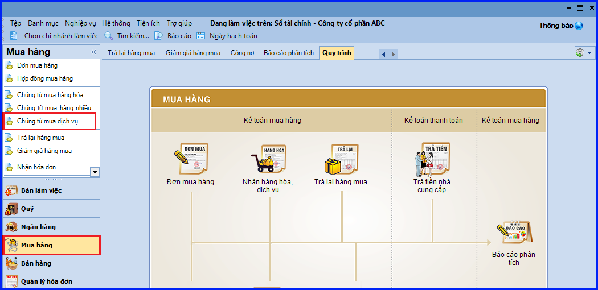
- Chọn phương thức thanh toán.
- Tích chọn "Là chi phí mua hàng" và khai báo thông tin chi tiết về phí trước hải quan.
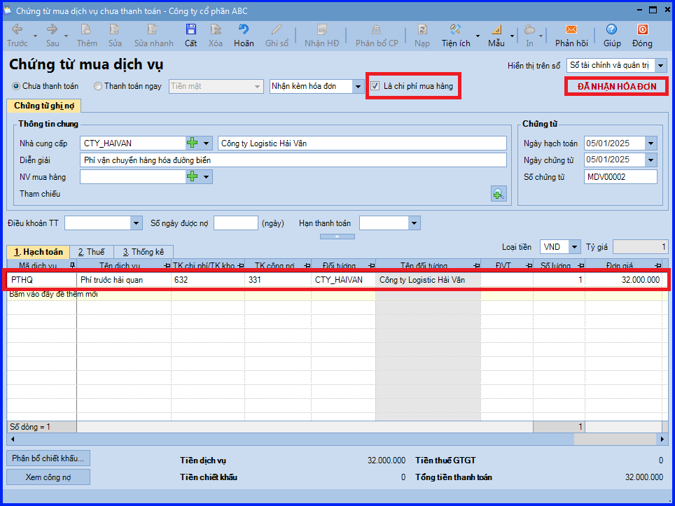
- Sau khi khai báo xong => các bạn ấn "Cất".
CHÚ Ý:
- Với các chi phí trước hải quan phát sinh bằng ngoại tệ, cần lựa chọn "Loại tiền ngoại tệ" để khai báo giá trị chi phí trước hải quan.
- Trước khi lập chứng từ mua dịch vụ, kế toán cần phải khai báo một hàng hoá là phí trước hải quan có tính chất là "Dịch vụ" trên danh mục "Vật tư hàng hoá".
Bước 2: Hạch toán chi phí vận chuyển hàng về thẳng kho của khách hàng
- Thực hiện thêm chứng từ mua dịch vụ tương tự như ở bước 1.
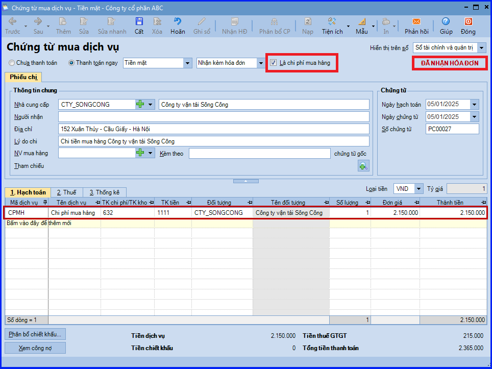
Bước 3: Hạch toán chứng từ mua hàng nhập khẩu về không qua kho
(Trước tiên cần vào menu "Hệ thống" => chọn "Tùy chọn" => chọn "Mua hàng" => tích chọn ô "Tính Giá tính thuế nhập khẩu" dựa trên "Phí trước HQ nguyên tệ, Phí trước HQ" bằng tiền hạch toán)
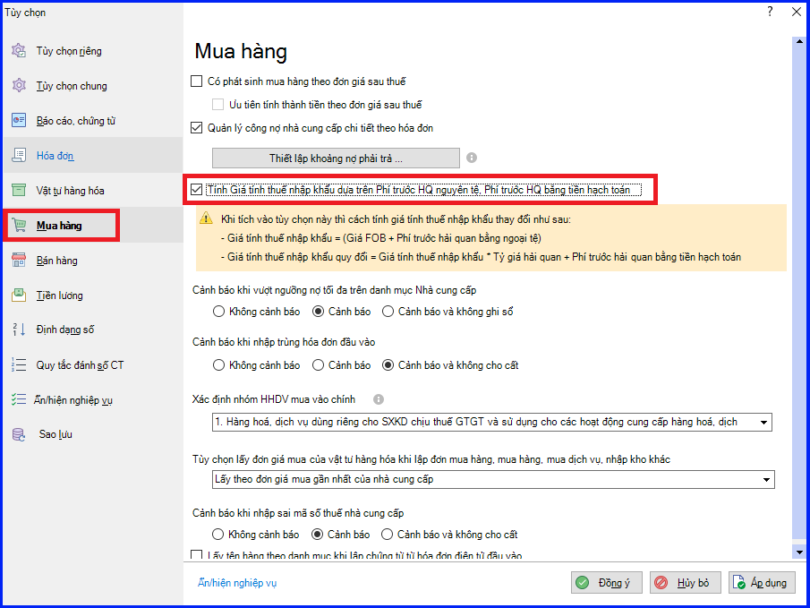
- Trên phân hệ "Mua hàng" => chọn "Chứng từ mua hàng hóa" (hoặc vào tab "Mua hàng hóa, dịch vụ" => ấn "Thêm\Chứng từ mua hàng hóa")
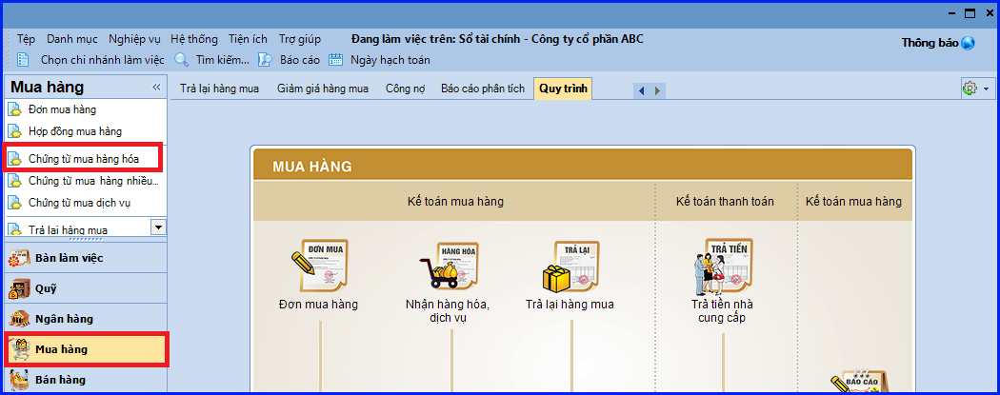
- Khai báo các thông tin chi tiết của chứng từ mua hàng:
+ Chọn loại chứng từ mua hàng cần lập là "Mua hàng nhập khẩu không qua kho".
+ Lựa chọn phương thức thanh toán.
+ Chọn "Loại tiền" => Tỷ giá sẽ được tự động lấy lên theo cách thiết lập tại danh mục Loại tiền (Có thể nhập lại tỷ giá theo đúng thực tế nếu cần)
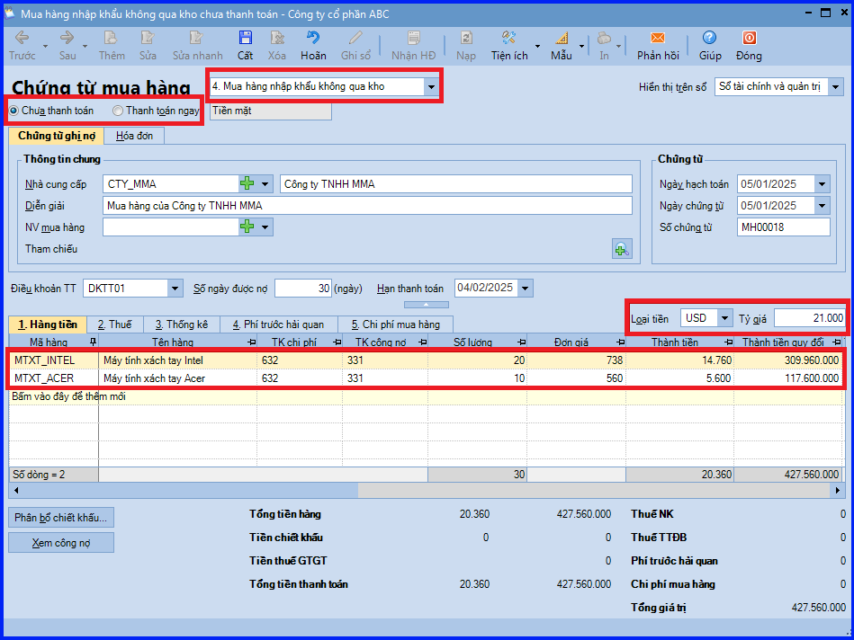
- Tại tab "Phí trước hải quan", thực hiện phân bổ phí trước hải quan đã được khai báo ở bước 1:
+ Các bạn ấn "Chọn".
+ Thiết lập các điều kiện tìm kiếm chứng từ chi phí, sau đó nhấn "Lấy dữ liệu".
+ Tích chọn chứng từ hạch toán chi phí trước hải quan cần phân bổ vào giá trị hàng nhập khẩu.
+ Nhập lại số tiền được phân bổ nếu chứng từ chi phí trước hải quan được sử dụng để phân bổ cho nhiều chứng từ mua hàng khác nhau.
- Cột "Số phân bổ lần này" phản ánh số tiền phân bổ theo nguyên tệ (áp dụng với phí trước hải quan phát sinh bằng ngoại tệ).
- Cột "Số phân bổ lần này QĐ" phản ảnh số tiền phân bổ theo đồng tiền hạch toán hoặc được quy đổi ra đồng tiền hạch toán.
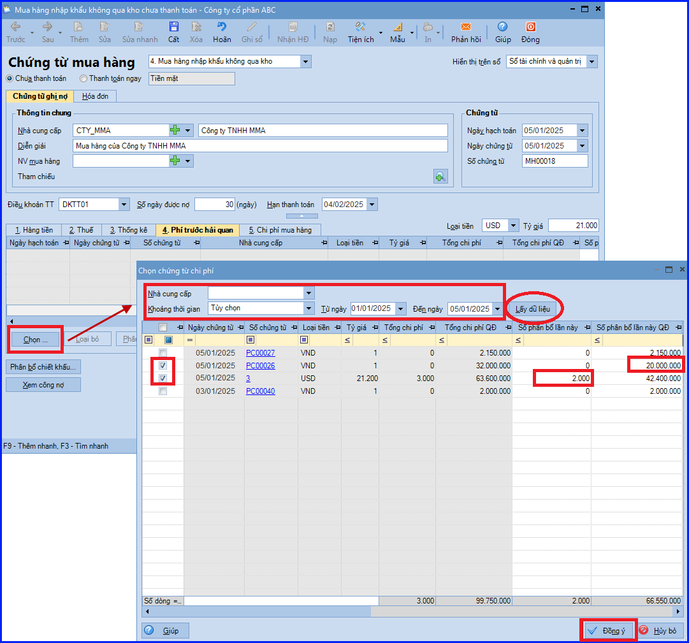
+ Các bạn ấn "Đồng ý".
+ Ấn "Phân bổ CP".
+ Chọn phương thức phân bổ và ấn "Phân bổ".
+ Các bạn ấn "Đồng ý". Chương trình sẽ tự động phân bổ phí trước hải quan bằng ngoại tệ và phí trước hải quan bằng tiền hạch toán vào giá trị hàng nhập khẩu, đồng thời cập nhật giá trị tương ứng vào cột "Phí trước HQ bằng ngoại tệ", cột "Phí trước HQ bằng tiền hạch toán" trên tab "Thuế" và cột "Phí trước hải quan" trên tab "Hàng tiền".
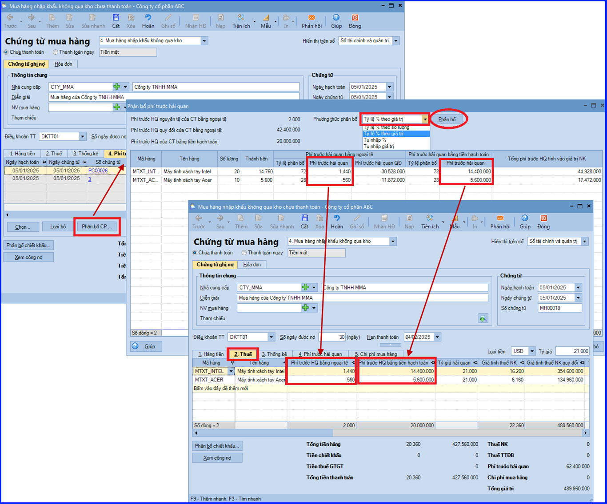
- Tại tab "Thuế": Khai báo thuế suất thuế nhập khẩu/thuế chống bán phá giá/thuế Tiêu Thụ Đặc Biệt (nếu có)/thuế GTGT hàng nhập khẩu. Chương trình sẽ tự động xác định tiền thuế phải nộp theo đúng thực tế trên tờ khai hải quan.
CHÚ Ý: Chương trình đáp ứng các trường nhập thông tin thuế chống bán phá giá từ MISA SME 2022 – R22
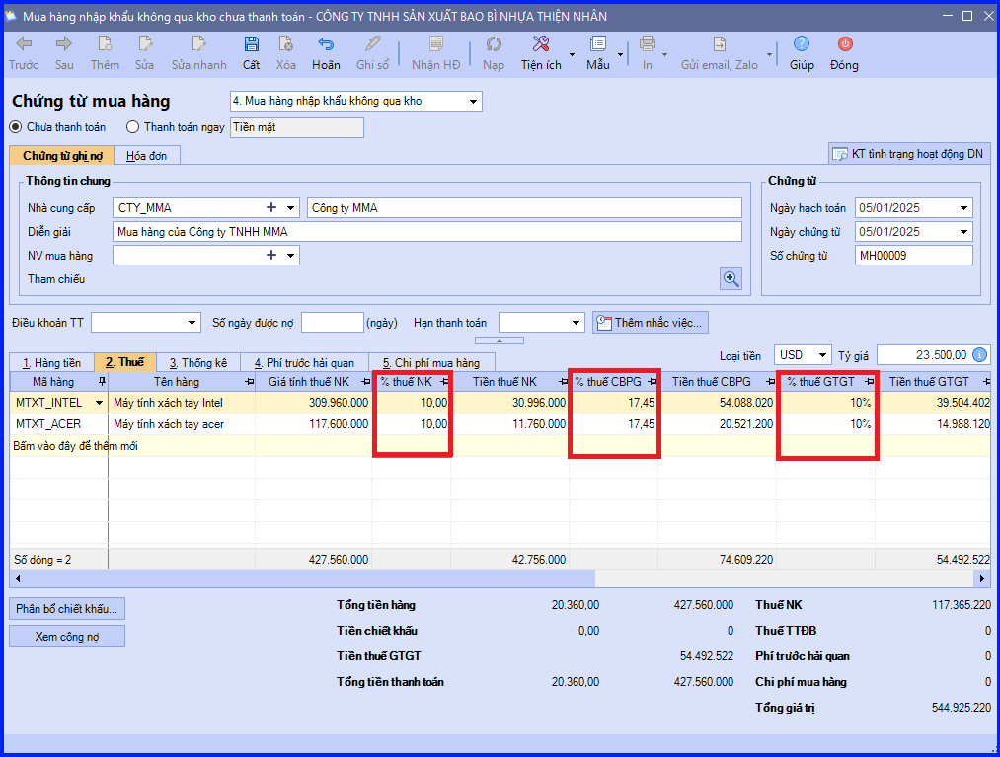
- Tại tab "Chi phí mua hàng", thực hiện phân bổ chi phí mua hàng tương tự như phân bổ chi phí trước hải quan:
+ Chọn chi phí mua hàng cần phân bổ.
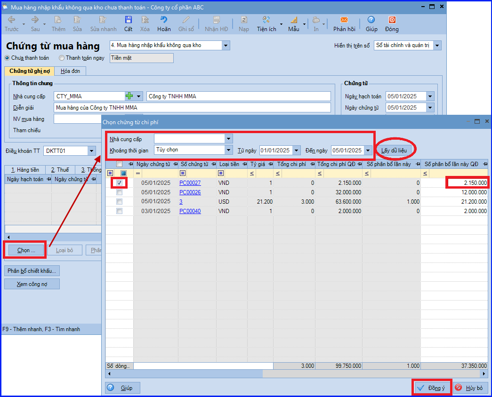
CHÚ Ý: trường hợp chứng từ phí mua hàng được sử dụng để phân bổ cho nhiều chứng từ mua hàng khác nhau, cần nhập lại số tiền phân bổ (theo đồng tiền hạch toán) vào cột "Số phân bổ lần này QĐ".
+ Phân bổ chi phí mua hàng.
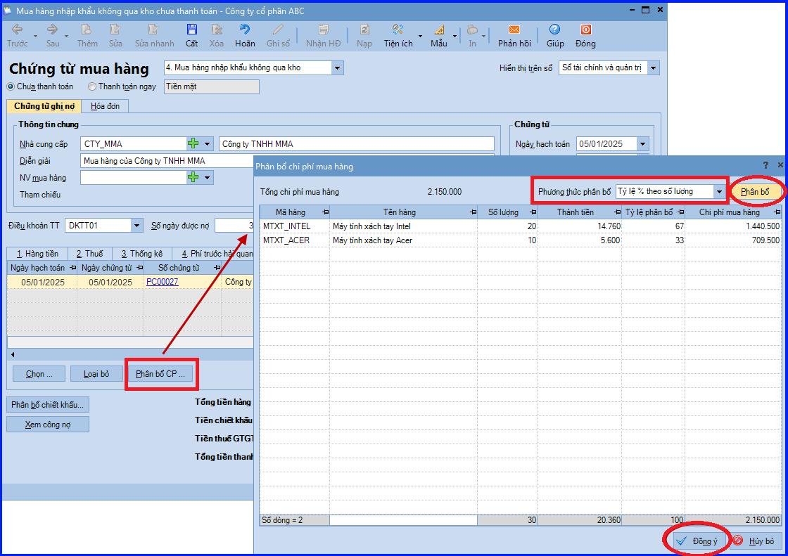
+ Chương trình sẽ tự động phân bổ chi mua hàng vào giá trị hàng nhập khẩu trên tab "Hàng tiền".
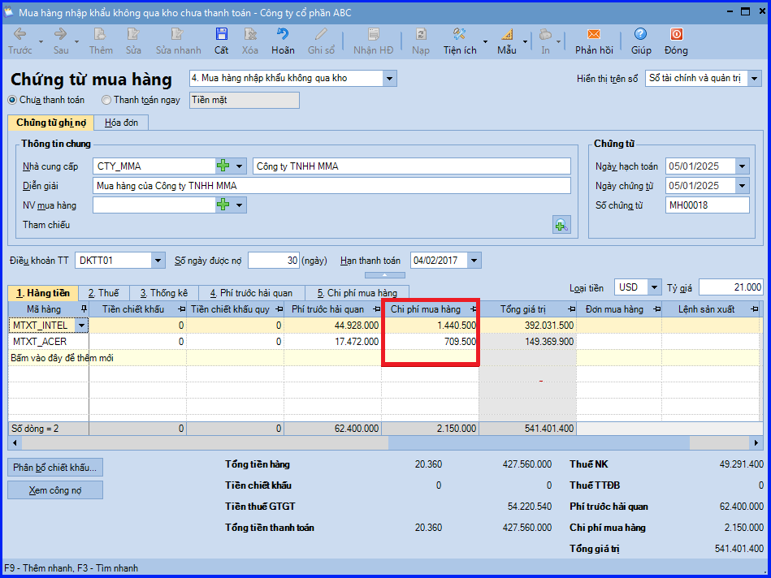
- Tại tab "Hóa đơn": nhập thông tin của chứng từ, biên lai nộp thuế GTGT hàng nhập khẩu.
- Các bạn ấn "Cất".
CHÚ Ý:
- Trường hợp kế toán không có nhu cầu theo dõi "Phí trước hải quan" và "Chi phí mua hàng" tại bước 3 thì không cần phải tích chọn Là chi phí mua hàng tại bước 1 và bước 2.
- Trong trường hợp hạch toán thẳng Chi Phí Mua Hàng vào chứng từ và đã thực hiện phân bổ, nếu người dùng thay đổi/sửa lại 1 trong số các chức năng/số liệu sau thì lưu ý cần phân bổ lại chi phí để chương trình cập nhật "Tổng giá trị" tại dòng Chi Phí Mua Hàng về 0:
- Chỉnh sửa Tỷ lệ CK, tiền CK, CPMH (tại dòng mã Chi Phí Mua Hàng), các loại thuế.
- Thay đổi hình thức nhận hóa đơn (Nhận kèm hóa đơn, Không kèm hóa đơn, Không có hóa đơn).
- Thay đổi loại chứng từ mua hàng (Mua hàng trong nước qua kho, không qua kho, nhập khẩu qua kho, nhập khẩu không qua kho)
- Nếu chứng từ mua hàng lựa chọn phương thức "Thanh toán ngay" => hệ thống sẽ căn cứ vào hình thức thanh toán là tiền mặt, uỷ nhiệm chi, séc chuyển khoản hay séc tiền mặt mà tự động sinh ra các chứng từ chi tiền mặt hoặc chi tiền gửi ngân hàng trên phân hệ "Quỹ" hoặc "Ngân hàng".
KẾ TOÁN DIỆU TÂM chúc các bạn làm tốt!
=============================
Nếu bạn muốn thành thạo các kỹ năng làm kế toán trên phần mềm Misa
Thì bạn có thể tham khảo "Khóa Học Thực Hành Kế Toán Trên Phần Mềm Misa" tại Công ty đào tạo Kế Toán Diệu Tâm
Trong khóa học này, bạn sẽ được dạy cách lên sổ sách, lập báo cáo tài chính trên phần mềm Misa
Chi tiết về chương trình đào tạo bạn xem tại đây nhé: Khóa học thực hành kế toán trên Misa
=============================
=============================
Nếu bạn muốn thành thạo các kỹ năng làm kế toán trên phần mềm Misa
Thì bạn có thể tham khảo "Khóa Học Thực Hành Kế Toán Trên Phần Mềm Misa" tại Công ty đào tạo Kế Toán Diệu Tâm
Trong khóa học này, bạn sẽ được dạy cách lên sổ sách, lập báo cáo tài chính trên phần mềm Misa
Chi tiết về chương trình đào tạo bạn xem tại đây nhé: Khóa học thực hành kế toán trên Misa
=============================